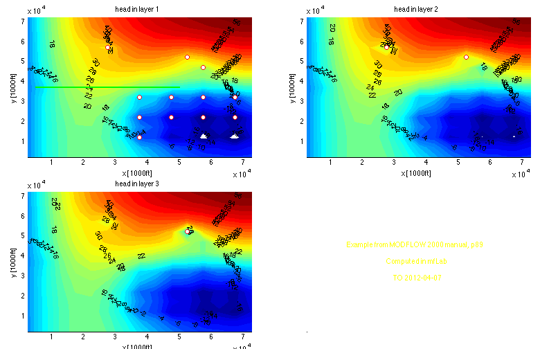
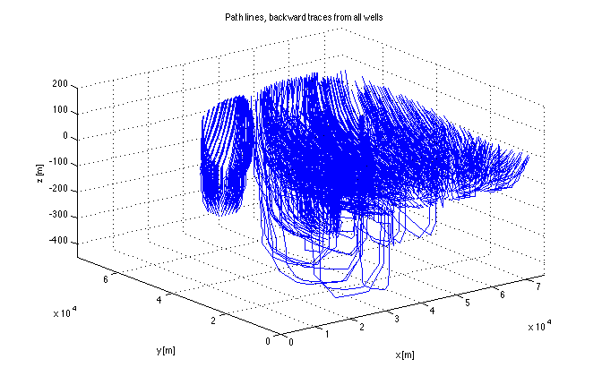

Visualizint the output of EX2 of the Modflow 2000 manual.
TO 091011 091129 120413 140112
Contents
Get data
load('name.mat') % get basename stored in file name.mat load(basename); % having retrieved baasename load the data in basename.mat load underneath % to get gr object % Read head file H=readDat([basename,'','.hds']); % Generate suitable set of contour levels hrange=ContourRange(H,50);
Reading MODFLOW binary output file <<ex2.hds>> verbose= 0
Scanning headers
finished, 3 records scanned
File contains the following:
Number of records in file : 3
Number of stress userPeriods: 1
Number of time steps : 1
Number of layers : 3
Number of rows : 15
Number of columns : 15
Maximum time in file " 100
Reading requested data ...
3 records read.
. 1 records in output struct.
Plot isolines of head
figure('pos',screenPos(0.6)); P=[0 0 0.4 0.4]; % size of subaxis fsz=10; % fontsize to use in figure % Create axes at their desired position ax(1)=axes('position', [0.05 0.55 0 0]+P,'nextplot','add','fontsize',fsz); ax(2)=axes('position', [0.55 0.55 0 0]+P,'nextplot','add','fontsize',fsz); ax(3)=axes('position', [0.05 0.05 0 0]+P,'nextplot','add','fontsize',fsz); ax(4)=axes('position', [0.55 0.05 0 0]+P,'nextplot','add','fontsize',fsz,... 'xColor',grey,'yColor',grey,'color','k','ticklength',[0 0]); % Make a contour plot for all (3) layers for iLay = 1:gr.Nlay set(gca,'clim',hrange([1 end])); xlabel(ax(iLay),'x [1000ft]'); ylabel(ax(iLay),'y [1000ft]'); title( ax(iLay), sprintf('head in layer %d',iLay)) % Contour layer iLay [c,hdl]=contourf(ax(iLay),gr.xm,gr.ym,H(end).values(:,:,iLay),hrange,'edgecolor','none'); clabel(c,hdl); % plot contour labels % Plot wells in this layer Iw = find([well.iLay]==iLay); for iw = 1:length(Iw) well(iw).plotXY(ax(iLay),'or'); end % Plot drain if iLay==1, plot(ax(iLay),drn(:,1),drn(:,2),'color','g','linewidth',2); end end % Use forth axis to put informative text into s={'Example from MODFLOW 2000 manual, p89';''; 'Computed in mfLab';''; 'TO 2012-04-07'}; text(0.5,0.5,s,'HorizontalAlignment','center','color','yellow','fontsize',fsz);
Use zone budget to get budget overview
B=readBud6([basename, '.bgt']); % read the Budget file % Generate an array with zones for use in zonebudget (one zone per layer) zoneArray =bsxfun(@times,ones(gr.Ny,gr.Nx),XS([1; 2; 3])); % Show budget of each of the zones zonebudget(B,zoneArray,[1 2 3]);
This is a Single Precision Binary Compact Budget File
.......8
readBud6: 8 input records scanned, 1 output records in budget file
This is a Single Precision Binary Compact Budget File
.......8
readBud6: 8 input records read yielding 1 elements in output struct
============================================
zoneBudget will be computed for zones: 1 2 3
Budget [consistent model units] for period=1, itsp=1:
BUDGET FOR ZONE 1 2 3 -----IN----- ----OUT-----
total for CONSTANTHEAD = 0.00 28.28
total for FLOWRIGHTFACE = 0.00 -0.00
total for FLOWFRONTFACE = 0.00 -0.00
total for FLOWLOWERFACE = 0.00 -0.00
total for WELLS = 0.00 75.00
total for DRAINS = 0.00 1.72
total for RECHARGE = 105.00 -0.00
------------ ------------
total for ZONE 1 2 3 = 105.00 105.00
total net ZONE 1 2 3 = -0.00
Show particles
Read the particles from the files that were generated by Modpath. Be aware that this takes several minutes. Progress will be indicated using dots.
figure('pos',screenPos(0.5)); hold on; xlabel('x [m]'); ylabel('y [m]'); zlabel('z [m]'); title('Path lines, backward traces from all wells'); pGrp = pGrp.getEndPoints('mp6.endp'); % add endpoints to pGrp (particle groups) pGrp.endPointStatistics(); % show endpoint statistics. pGrp.plotEndPoints('k.'); % plot the endpoints pGrp.plotStartPoints('b.'); % plot the start points % Adapt properties of current axis for better view on plot. % The picture can be rotated by hand using the roation tool in the toolbar % of the figure window. set(gca,'xlim',gr.xGr([1 end]),'ylim',gr.yGr([end 1]),'zlim',gr.zGr([end 1]), ... 'xgrid','on','ygrid','on','zgrid','on'); pGrp = pGrp.getPathLines('mp6.plines'); % read the path lines pGrp.plotPath(); % plot them. view(3); % use a 3D view % -------------- END ------------------------------------
# MATLAB readEndPoints 13-Jan-2014 00:52:41
# Statistics for endpoints of group 1, 'well(1)'
Total nr of endpoints = 1500
pending = 0
active = 0
normally terminated = 1500
zoneTerminated = 0
unreleased = 0
stranded = 0
# ==============================
# Statistics for endpoints of group 2, 'well(2)'
Total nr of endpoints = 1500
pending = 0
active = 0
normally terminated = 1500
zoneTerminated = 0
unreleased = 0
stranded = 0
# ==============================
# Statistics for endpoints of group 3, 'well(3)'
Total nr of endpoints = 1500
pending = 0
active = 0
normally terminated = 1500
zoneTerminated = 0
unreleased = 0
stranded = 0
# ==============================
# Statistics for endpoints of group 4, 'well(4)'
Total nr of endpoints = 1500
pending = 0
active = 0
normally terminated = 1500
zoneTerminated = 0
unreleased = 0
stranded = 0
# ==============================
# Statistics for endpoints of group 5, 'well(5)'
Total nr of endpoints = 1500
pending = 0
active = 0
normally terminated = 1500
zoneTerminated = 0
unreleased = 0
stranded = 0
# ==============================
# Statistics for endpoints of group 6, 'well(6)'
Total nr of endpoints = 1500
pending = 0
active = 0
normally terminated = 1500
zoneTerminated = 0
unreleased = 0
stranded = 0
# ==============================
# Statistics for endpoints of group 7, 'well(7)'
Total nr of endpoints = 1500
pending = 0
active = 0
normally terminated = 1500
zoneTerminated = 0
unreleased = 0
stranded = 0
# ==============================
# Statistics for endpoints of group 8, 'well(8)'
Total nr of endpoints = 1500
pending = 0
active = 0
normally terminated = 1500
zoneTerminated = 0
unreleased = 0
stranded = 0
# ==============================
# Statistics for endpoints of group 9, 'well(9)'
Total nr of endpoints = 1500
pending = 0
active = 0
normally terminated = 1500
zoneTerminated = 0
unreleased = 0
stranded = 0
# ==============================
# Statistics for endpoints of group 10, 'well(10)'
Total nr of endpoints = 1500
pending = 0
active = 0
normally terminated = 1500
zoneTerminated = 0
unreleased = 0
stranded = 0
# ==============================
# Statistics for endpoints of group 11, 'well(11)'
Total nr of endpoints = 1500
pending = 0
active = 0
normally terminated = 1500
zoneTerminated = 0
unreleased = 0
stranded = 0
# ==============================
# Statistics for endpoints of group 12, 'well(12)'
Total nr of endpoints = 1500
pending = 0
active = 0
normally terminated = 1500
zoneTerminated = 0
unreleased = 0
stranded = 0
# ==============================
# Statistics for endpoints of group 13, 'well(13)'
Total nr of endpoints = 1500
pending = 0
active = 0
normally terminated = 1500
zoneTerminated = 0
unreleased = 0
stranded = 0
# ==============================
# Statistics for endpoints of group 14, 'well(14)'
Total nr of endpoints = 1500
pending = 0
active = 0
normally terminated = 1500
zoneTerminated = 0
unreleased = 0
stranded = 0
# ==============================
# Statistics for endpoints of group 15, 'well(15)'
Total nr of endpoints = 1500
pending = 0
active = 0
normally terminated = 1500
zoneTerminated = 0
unreleased = 0
stranded = 0
# ==============================
mpath_particleGroupObj: Reading path lines ...
# MATLAB readPath 13-Jan-2014 00:52:44
readPath: Reading <<4631130>> records from path line file <<mp6.plines>> ...
..................................................50000
..................................................100000
..................................................150000
..................................................200000
..................................................250000
..................................................300000
..................................................350000
..................................................400000
..................................................450000
..................................................500000
..................................................550000
..................................................600000
..................................................650000
..................................................700000
..................................................750000
..................................................800000
..................................................850000
..................................................900000
..................................................950000
..................................................1000000
..................................................1050000
..................................................1100000
..................................................1150000
..................................................1200000
..................................................1250000
..................................................1300000
..................................................1350000
..................................................1400000
..................................................1450000
..................................................1500000
..................................................1550000
..................................................1600000
..................................................1650000
..................................................1700000
..................................................1750000
..................................................1800000
..................................................1850000
..................................................1900000
..................................................1950000
..................................................2000000
..................................................2050000
..................................................2100000
..................................................2150000
..................................................2200000
..................................................2250000
..................................................2300000
..................................................2350000
..................................................2400000
..................................................2450000
..................................................2500000
..................................................2550000
..................................................2600000
..................................................2650000
..................................................2700000
..................................................2750000
..................................................2800000
..................................................2850000
..................................................2900000
..................................................2950000
..................................................3000000
..................................................3050000
..................................................3100000
..................................................3150000
..................................................3200000
..................................................3250000
..................................................3300000
..................................................3350000
..................................................3400000
..................................................3450000
..................................................3500000
..................................................3550000
..................................................3600000
..................................................3650000
..................................................3700000
..................................................3750000
..................................................3800000
..................................................3850000
..................................................3900000
..................................................3950000
..................................................4000000
..................................................4050000
..................................................4100000
..................................................4150000
..................................................4200000
..................................................4250000
..................................................4300000
..................................................4350000
..................................................4400000
..................................................4450000
..................................................4500000
..................................................4550000
..................................................4600000
..................................
<<4631130>> lines read (thanks for waiting)
# Statistics for path file mp6.plines
Total nr of points = 102
Total nr of time steps = 1
Min time = 0
Max time = 8.52277e+10
# ==============================
Sorting pathline points ... done
Plotting pathlines
Group 15, sorting, plotting, done.
Group 14, sorting, plotting, done.
Group 13, sorting, plotting, done.
Group 12, sorting, plotting, done.
Group 11, sorting, plotting, done.
Group 10, sorting, plotting, done.
Group 9, sorting, plotting, done.
Group 8, sorting, plotting, done.
Group 7, sorting, plotting, done.
Group 6, sorting, plotting, done.
Group 5, sorting, plotting, done.
Group 4, sorting, plotting, done.
Group 3, sorting, plotting, done.
Group 2, sorting, plotting, done.
Group 1, sorting, plotting, done.
